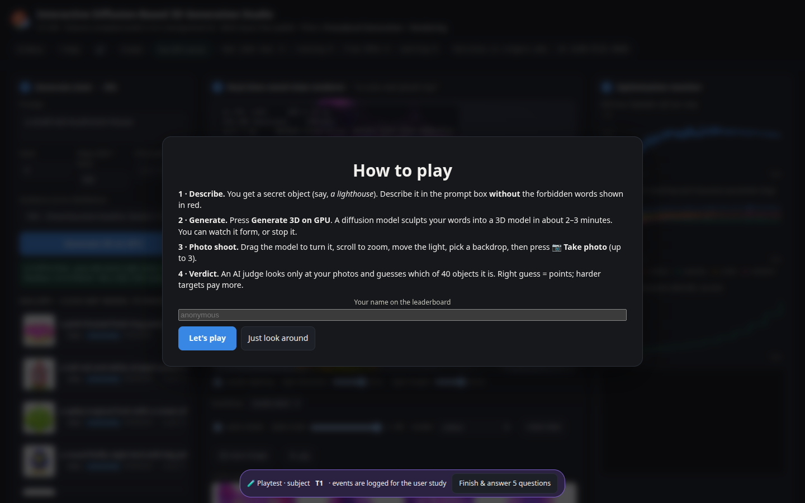
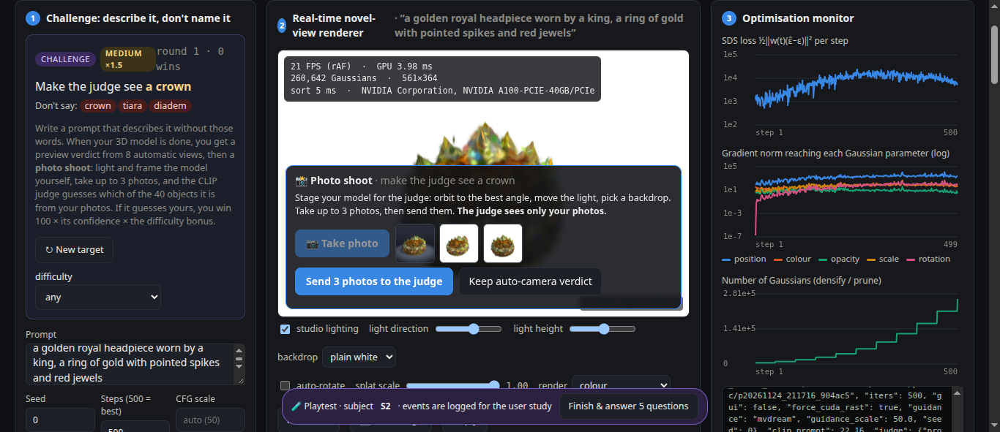
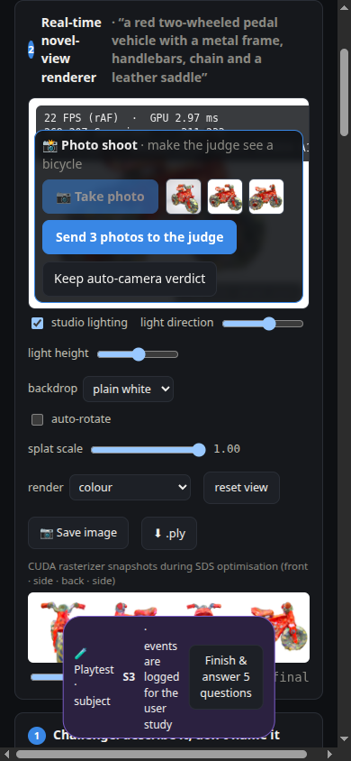
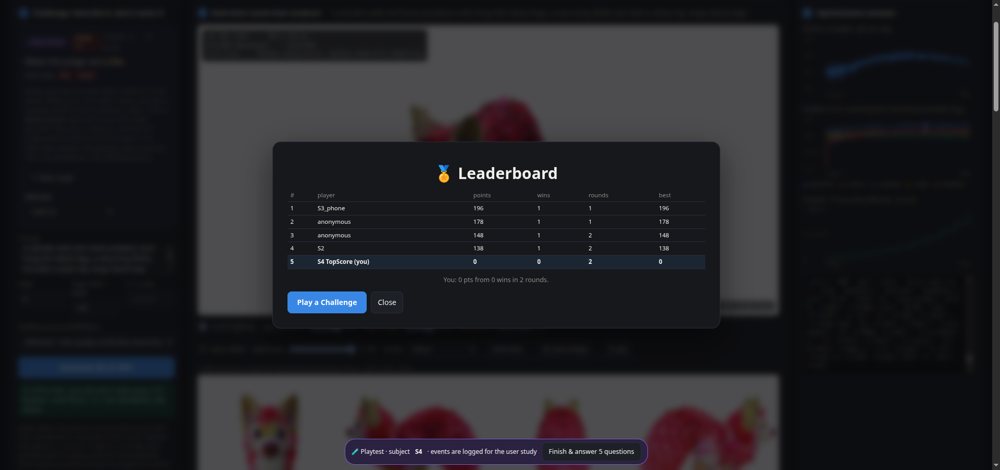

Final feature integrations (this sprint):
?playtest=ID: clicks, screens, photos, jobs,
rounds, errors and FPS every 5 s are logged; the 5 interview questions are asked in the app.| Production-plan item (A4 / A5 schedule) | Status at the freeze |
|---|---|
| Game loop, Challenge, CLIP judge, render modes (A4) | done (A4) |
| Rendering pillar in the loop: lighting, stage, photo shoot, exhibition + LOD (A5) | done (A5) |
| Persistence (SQLite) + leaderboard | done (this sprint) |
| More targets with easy / medium / hard tiers | done: 40 targets, ×1 / ×1.5 / ×2; judge top-1 48/50 |
| Gallery moderation (owner hide) | done |
| Onboarding, help, empty / error states; final UI and audio assets | done: How-to-play, Help, nickname, synthesised SFX + mute |
| Playtest instrumentation | done: ?playtest=ID telemetry + in-app interview |
| Stage-2 mesh refinement + mesh/Gaussian toggle | cut: doubles GPU time per round; gameplay and judge use Gaussians; .ply download kept |
| Reference render per challenge target | cut: replaced by the auto-camera preview verdict (A5) |
| Stable named hosting | cut: needs a registered domain; quick tunnel + GitHub Pages static build |
| GPU sort, per-pixel shading, mobile layout polish | moved to A7 (optimisation / polish, not features) |




| subj. | player type | screen | rounds: target (tier) result, photo vs preview (conf. pts) | controls /10 | fun /10 |
|---|---|---|---|---|---|
| S1 | fast gamer, skims text | 1440×900 | crown (M) ✓ 148 +18; television (H) ✗ -6 | 6 | 7 |
| S2 | non-gamer, careful reader | 1366×768 | crown (M) ✓ 138 +1; sailboat (M) ✗ -37 | 5 | 7 |
| S3 | graphics student on a phone | 390×844 | bicycle (H) ✓ 196 +1 | 5 | 7 |
| S4 | competitive, tests the rules | 1920×1080 | fox (H) ✗ -15; fox (H) ✗ -22 | 7 | 6 |
| S5 | impatient; stops, reloads, leaves mid-step | 1280×800 | rocket (H) ✓ 178 auto; crown (M) ✓ 150 +1 | 6 | 7 |
All 5 subjects finished at least one Challenge round without help: 9 rounds, 5 wins. Controls were rated 5–7/10 (mean 5.8) and fun 6–7/10 (mean 6.8). There were no crashes. Frame rate held the ≥ 30 FPS target (61.0 FPS for one model, 38–44 for exhibitions), apart from short dips when a model loads.
| Subject feedback and observations (grouped) | reported |
|---|---|
| The photo-shoot panel sits on top of the 3D view and hides most of the model, so photos are framed blind (worst on the phone); the shoot opens with the camera too close and reset view returns to that close-up. | 5/5 S1 S2 S3 S4 S5 |
| Photos can lower the score with no warning: in 4 of 8 photo rounds the judge was less sure than on the automatic preview (sailboat 41% → 3%; fox 51% → 29% turned a likely win into 0 pts). Losses are not explained. | 3/5 S1 S2 S4 |
| While the model trains, the main viewer keeps showing the previous model; progress is only in the snapshot strip below the fold. Broken snapshot image right after Generate/Retry; status shows “starting” and “#1 in queue” together. | 4/5 S1 S2 S4 S5 |
| Leaving the photo shoot (Esc → menu) scores the round on the preview without asking and drops the photos taken; after a reload during a job the Challenge card disappears until the model is ready. | 1/5 S5 |
| Small UI faults: difficulty badge overlaps the round counter; the playtest bar covers buttons; the prompt box silently cuts text at 120 characters; the forbidden-word warning is below the fold (and “F O X” passes); Leaderboard “Close” returns to the menu; the survey confirmation disappears too fast; the phone page scrolls sideways. | 5/5 S1 S2 S3 S4 S5 |
| Technical jargon (CFG, SDS loss, Gaussians, CLIP, guidance methods, raw training log) confuses non-graphics players. | 1/5 S2 |
| Frame-rate dips when a job starts, a model opens or the photo shoot opens (3 FPS twice, 11 FPS once): PLY parse + first sort run on the main thread. | 3/5 S1 S2 S5 |
| Week | Work |
|---|---|
| 9–12 · Oct 26–Nov 22 | Alpha v0.2 (A4), Beta v0.3 (A5): game loop, judge, rendering pillar in the loop |
| 13 · Nov 23–29 | Feature freeze (this build, v1.0-rc): persistence, leaderboard, tiers, onboarding, audio, moderation, playtest mode; 5-subject playtest |
| 14 · Nov 30–Dec 6 | A7 optimisation sprint: the 5 action items above; re-run the playtest protocol and the render benchmark |
| 15 · Dec 7–13 | BUFFER: bug fixes, documentation, final video and v1.0 release only; no new features |
Run: bash scripts/setup_env.sh then bash scripts/serve_public.sh (Linux + NVIDIA GPU ≥ 12 GB). Playtest protocol for real
sessions: report/playtest_protocol.md; analysis: python scripts/playtest_summary.py.